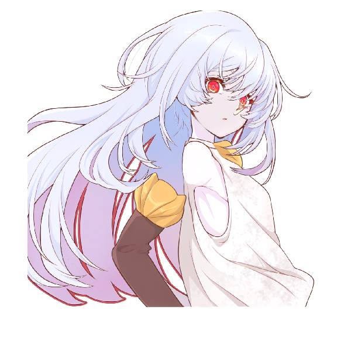
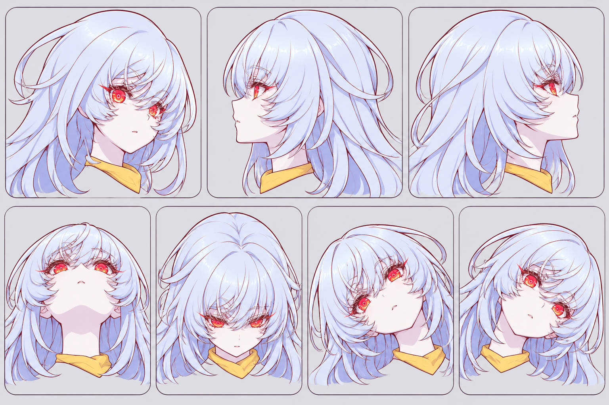
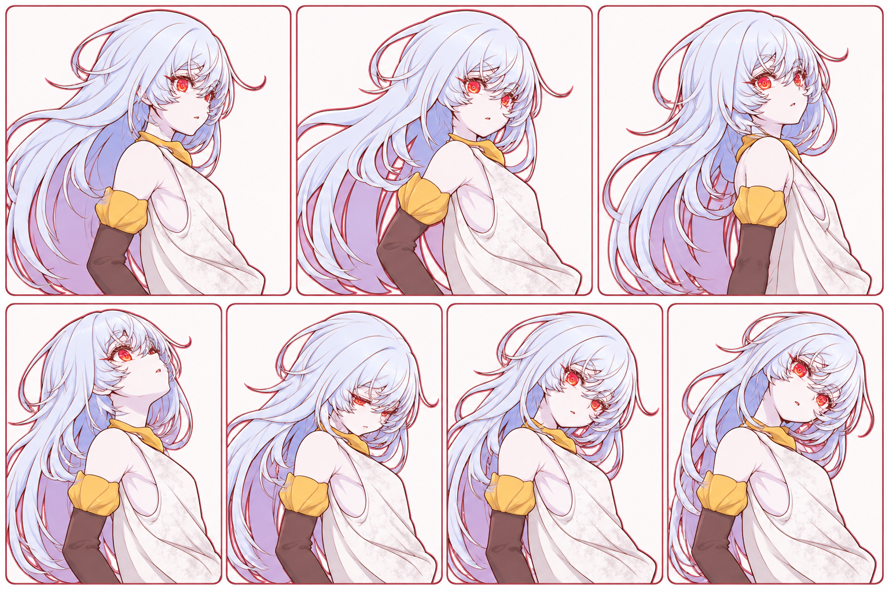
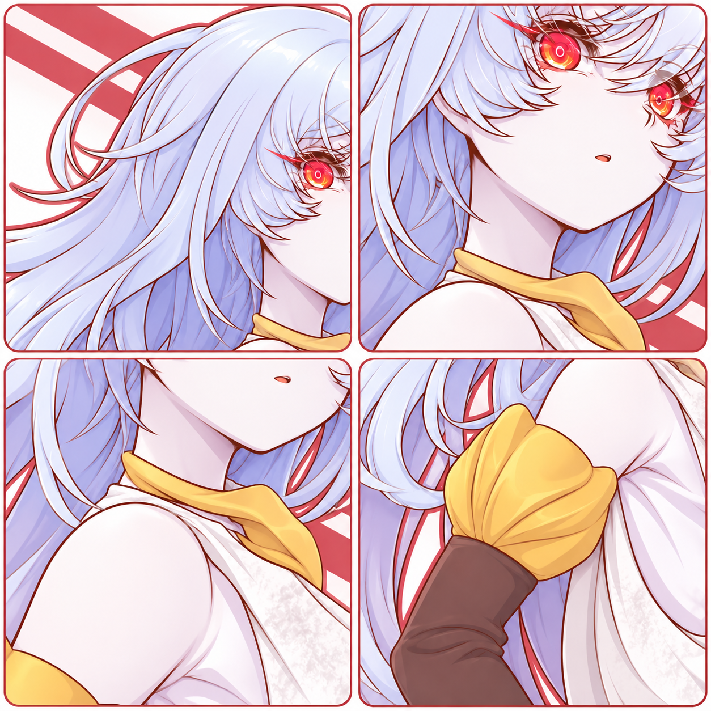

Grok CLI inspection and preparation · 4 November 2026
Incomplete — rigging has not been committedThe repaired PSD is loaded and a checkpoint has been created. The model remains a static import: it has no animation bindings, deformers, meshes, or hair physics. The generated images below are draft concepts, not verified rig poses.
988af116-5999-4493-9caa-d99f52ac08d6 for the current revision.
Actual StandRig render, not a generated pose. No animated extremes have been created or tested.

The profiles and poses are artistic concepts. Their angles are not calibrated to the model’s numeric parameters and may reveal artwork that does not exist in the PSD.

Not accepted as a body-motion target: the images primarily change head direction and do not clearly demonstrate torso rotations.

These show plausible seams only. They are not separated hidden layers and do not prove that joints stay covered during movement.
| Stage | Needed | Status |
|---|---|---|
| 1 · Plan and references | Calibrate pose targets, inspect hidden coverage and verify identity and parameter ranges. | Draft concepts only |
| 2 · Meshes and hierarchy | Assign confirmed parts and create suitable meshes and head/body connections. | Not started |
| 3 · Eyes and mouth | Separate eyelids or usable blink shapes, clipped irises, and mouth-interior artwork for convincing speech. | Not started; artwork incomplete |
| 4 · Head, body and hair | Build keyforms, test connections and add restrained hair physics after static poses pass. | Not started |
| 5 · Expressions and review | Author expressions and inspect neutral, extremes and combined renders. | Not started |
StandRig’s operator contract requires actual, inspected face, body and connection target sheets with a manifest of source revision, panel order, parameter extremes and acceptance checks. These draft concepts do not meet that gate. The body targets need to depict body motion, and lower-body references cannot be inferred from this cropped PSD. Hidden artwork must be extended where movement reveals gaps. After those materials are ready, use revision-checked dry runs, numeric QA, checkpoints, and actual maximum-pose visual comparisons for each accepted region.
Model revision: rig-sha256-dc3b020ef5c985666d7ef9b02528d0a30cab66809774d9d9c36bfe7dc3d8139a
Source PSD SHA-256: f19e8c7d2187913de7cf1633d1a88ff7d6153d09ea8a1322527f111e3db53279